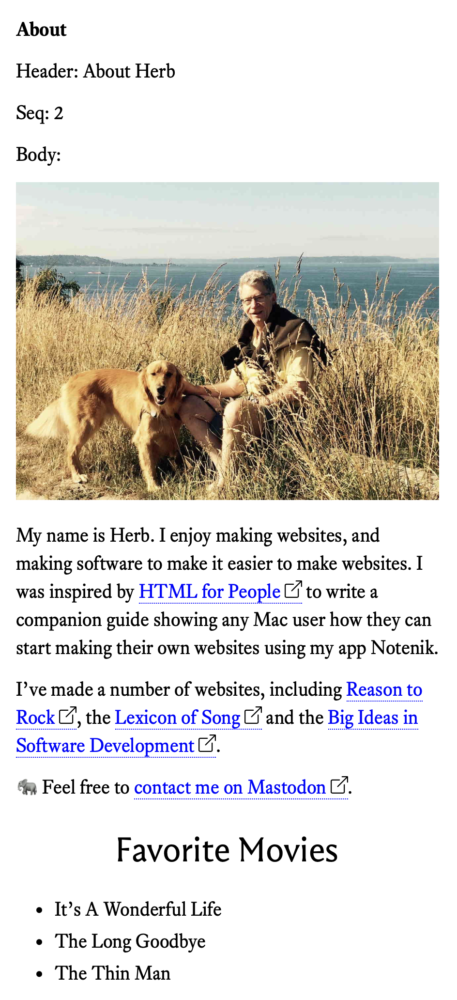

5. Adding an about page ↑
5.1. Create a second content page
We’re going to create a second content page.
And we’re going to do this within Notenik.
Start by selecting your home (aka Index) page, then right-click on the row in the List tab, then select duplicate.
This will create a copy of your first note, ready for modification.
Go ahead and change the Title to About.
Change the Header to About _____ (with your name replacing the underscores). I’ll enter About Herb for mine.
Then enter 2 in the Seq field.
Then go through and modify the Body in the ways suggested by Blake.
Don’t forget that you’ll generally be using Markdown instead of HTML within the Body field.
Here’s a handy little Markdown Cheat Sheet you can refer to as needed.
Here’s my text within the Body field.

My name is Herb. I enjoy making websites, and making
software to make it easier to make websites. I was inspired
by [HTML for People](https://htmlforpeople.com) to write
a companion guide showing any Mac user how they can
start making their own websites using my app Notenik.
I've made a number of websites, including
[Reason to Rock](https://reasontorock.com), the [
Lexicon of Song](https://lexiconofsong.org) and the
[Big Ideas in Software Development](https://www.softdevbigideas.com/).
🐘 Feel free to [contact me on Mastodon](https://c.im/#hbowie).
## Favorite Movies
+ It's A Wonderful Life
+ The Long Goodbye
+ The Thin Man
When you’re done entering your Body text, click on the Display tab to see the results.
Here’s what mine looks like.

Next: 5.2. Navigating between pages